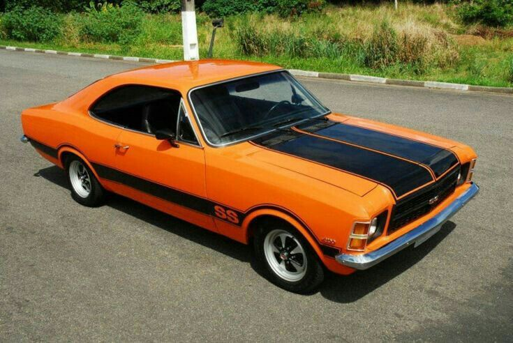

Motor e Desempenho:
Motor: Equipado com um propulsor 6 cilindros em linha, de 4.1 litros (250 CID), derivado da família de motores Chevrolet "Straight-Six".
Potência: Entre 140 e 155 cv, dependendo do ano e ajustes, acoplado a um carburador duplo corpo para maior eficiência.
Transmissão: Câmbio manual de 4 velocidades ou automático de 3, sendo o manual preferido por entusiastas.
Suspensão e Freios: Sistema reforçado com amortecedores específicos e freios a disco na dianteira, garantindo melhor controle em altas velocidades.
R$69.990